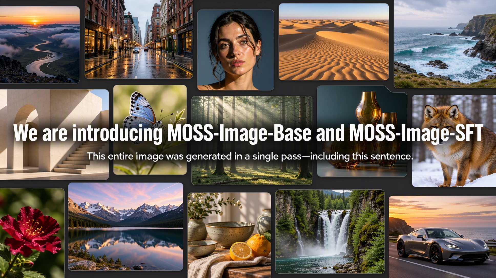

如果 AI 的逃逸速度是光速, 那么我应该选择一种体面的死法
这半年来事情变的太快。记得暑假和同事吃麦当劳，那个时候还在说，为什么现在的 AI 都在玩编程，为什么不去做 computer use 用专业软件。 然后一个星期过去 Astra 发布，直接震惊瘫坐（虽然后面由于降智感觉效果就是一坨）。 至于后面的数学证明爆炸，感觉也是没有什么好说了。每天就看着 分析学爱好者 介绍一颗又一颗核弹，学界的核冬天已经来临。 DeepSeek 的 Infra 研究员尚可将他的所谓才华埋葬在昨天，而作为 AI Native 时代的本科生，连体面死去的尊严都没有。
奋斗在基模第一线的这半年，也算是真正体验了一把现代工业对人的异化（笑）。 数不清的扯皮，数不清的对齐会议，感觉人在变成一颗螺丝钉。 最受不了的，是同同事直接用 agent 生成的文档交付。自己看不懂，就希望 codex 拉托屎给同事看。 有一段时间实在忍受不了了，就自己搭了个 agent mailbox，让同事直接把文档发给 agent 看。在人类开会之前，agent 们先自己对齐一遍。 一开始大家都兴致勃勃的加入，效率也提高不少。然后开发机就被强制关了四次，丢失了大量 session 和 memory 的 codex 再也没有能力当时的状态了。
说实话我其实有点愧疚。作为刚入门的菜鸟，难免会有犯错的时候，很多时候 agent 越来越牛，自己工作的完成度反而正在下降。 但是大家也很包容的接受了，甚至事无巨细的给予我详细的指点。 甚至有一段时间同事在国外开会，顶着时差和网络延迟还在盯着训练和纠正 bug，简直就是铁人啊。 想来，和志同道合的朋友们一起为了训一个模型而奋斗，着实是人生难有的经历。
当然，MOSS-Image 也是正式发布了呢。社区似乎对我们的模型响应的非常快。Kijai 在一天内就实现了 ComfyUI 的版本，civitai 也马上搬了过去。 layout 的社区插件和 LoRA 的训练框架也很快的接入了我们的模型。 个人认为，我们的模型其实不是很完美，如果满分是 100 分，感觉只拿到了 80 分（感觉很多分都是我扣的，实在很对不起）。 但是看到这么多人在后训练一个基模，在帮忙改进模型的效果，非常感动之余，也给了我很多 insight。
2026 年初的时候，我给自己订下的新年目标是：
- 系统地学习 AI 课程
- 持续动手构建 AI 系统
- 阅读研究论文
很显然，今年我已经做到了，而且超额完成（了吗？）。 但我感觉这仍然不够，还是 FOMO，焦虑和挫败感还是在数不清的晚上伴着我入睡。 想想也是，如果实在跟不上 AI 的进步速度，大不了就停止思考呗。 Prof. Yu Deng 说如果 AGI 真正取代了数学, 干脆不如回去写百合小说。 我想趁着我还年轻，还有做事的热情的时候，继续做一些我认为有意义的事。 如果 AI 的逃逸速度是光速, 那么我应该选择一种体面的死法。


